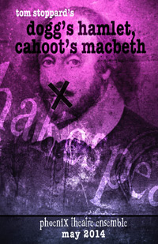
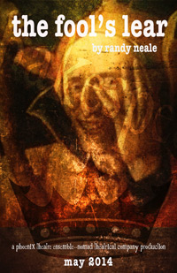
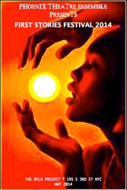

|
DOGG’S HAMLET, CAHOOT’S MACBETH
By Tom Stoppard
Directed by Kevin Confoy
In Dogg’s Hamlet, a group of young actors are setting up for their production Hamlet, performed in its original language. The catch? These students speak “Dogg” – a language comprised of English words, but with different meanings. When an English-speaking delivery man arrives with their set components, both languages break down and new ways of communication must be devised. Capped off with a hilarious 15-minute Hamlet. This is Stoppard at his word-playing, gleeful best.
In Cahoot’s Macbeth, the second play in Tom Stoppard’s pairing, renegade actors stage a secret performance of Shakespeare’s Macbeth that becomes a stark and moving metaphor for resistance in a time of censorship.
5/2, 5/3, 5/7, 5/8, 5/13, 5/21, 5/22, 5/23 @ 8pm
5/4 & 5/11 @ 3pm
|
 |
|
THE FOOL’S LEAR
By Randy Neale
A Phoenix Theatre Ensemble - Nomad Theatrical - Co-Production
Randy Neale’s funny and poignant comedic drama follows the journey of Lear and his Fool as their story travels alongside the path of one of Shakespeare’s greatest tragedies, exploring the byways between the familiar onstage scenes. Playwright Randy Neale says… “It is a story of fathers and children, aging and death, and the folly of all those who think they rule their own lives. It is about the end of power and the end of life as lived by a clown, whether that clown is a fool or a king.”
5/5, 5/6, 5/9, 5/10, 5/14, 5/15, 5/16, 5/17, 5/24 @ 8pm
5/18 & 5/25 @ 3pm
|
 |
|
MICHAEL LYDON
5/9 @ 10pm During our Spring Rep!
Singer-songwriter and pioneering rock music writer MICHAEL LYDON will bring his pop-jazz originals and standards back to the Phoenix Nite Flite series for the second year in a row. Lydon, known to millions as “The Handsomest Man in the World,” has played his romantic swinging music in clubs, colleges, churches, and street fairs all around New York City for decades. At Nite Flite he’ll be accompanied by his long-time partner, pianist Ellen Mandel. Lydon, a founding editor of Rolling Stone, will also read from his rock writing, including his college column on the Beatles arriving in the US and his eyewitness account of touring embedded with the Rolling Stones.
HEARSAY & HYPERBOLE
ALEXIS POWELL
5/10 @ 10pm During our Spring Rep!
Hearsay & Hyperbole is the voice, video and performance project of Alexis Powell. Like a foreign coin on a city sidewalk or a necklace buried in the dirt, Alexis Powell’s music as Hearsay and Hyperbole is earthy but mysterious. Her first EP, Hold Your Fire, mixes open-throated vocals with percussion-heavy arrangements that evoke folk, gospel and the darker moods of country without ever conforming to one in particular. Intrigued by the inspiration found in sleep, her live performances incorporate fugues and loops, playing with the repetition inherent in unconscious states. On May 10th, Alexis will be performing dreams (yours and her own).
THE PETTING ZOO
5/16 @ 10pm During our Spring Rep!
Back by popular demand, Phoenix presents New York’s popular and loved “Petting Zoo” as they present on the spot improvised musicals, operas, operettas, and more, from audience suggestions. However during our Fall/Winter Rep, some of the recommendations may just be dedicated to some of our First Stories Festival themes or famous Villains inspired by our Bad to the Bone Series! Not to be missed…. Great Fun, Genius, and Just a Bit Scandalous!
CHRIS LOWE
Performing 5/17 @ 10pm during our Spring Rep!
Chris Lowe is a singer/songwriter who grew up in and around New York City. He has lived in Greenwich Village all his adult life and this is reflected in his songs about the people, places and things in his beloved neighborhood. His first album was produced by his friend and mentor Dave Van Ronk who said that Chris writes songs with,”a wonderful sense of place…captured with a deftness that a novelist might envy.” Heavily influenced by the delta and country blues artists of the thirties as well as traditional folk, jazz and classical, Chris’s music displays a unique synthesis of the old and new.
|
|
PHOENIX FOR THE FAMILY PRESENTS
"IMPROV 4 KIDS"
5/10 & 5/24 @ 11am
This talented troupe has presented over 3000 shows and workshops nationwide! A high energy 100% interactive audience participation show, featuring talented professional performers who present a series of original characters, stories, skits, songs, and dances, based on audience suggestions (a favorite color, book, movie, etc). Actors create an original action-packed comedy on the spot that is entertaining and unique for children and adults of all ages.
IMPROV 4 KIDS doesn’t simply entertain kids, it ENGAGES them!
|
|
First Stories Festival
THERE WAS A WORLD
SONGS FOR THEN AND NOW
Saturday, May 17 @ 3pm
Music by Ellen Mandel Starring The Swinging Sirens
Bridget Beirne, Jessica Crandall, Sonni James and Ellen Mandel on piano
Hear composer Ellen Mandel and three super-talented singers perform Mandel’s songs in celebration of her new CD There Was A World, to texts from First Stories like Agamemnon Home and Wolfpit by Glyn Maxwell (Phoenix Theatre Ensemble resident playwright), Seamus Heaney’s The Cure at Troy, Shakespeare, e.e. cummings and others.
The New York Times calls Ellen’s lyrical and jazzy, humorous and moving songs “ardent, spiky, and freshly organic.”
All Things Considered says “a striking collaboration…I wish I could give this CD to every poetry lover I know.”
|
 |
|
NEAR VICKSBURG
SATURDAY MAY 24 @ 8pm
Written and Directed By Sara Farrington
FEATURING: Megan Emery Gaffney*, Ugo Chukwu*, Chris Michael Burke* and Zoë Van Tieghem
Near Vicksburg is set in the Civil War during Siege of Vicksburg. On May 18th, 1863 Union troops (or “Feds”) fell upon the river city of Vicksburg, MS and fought for it until July 4th, a total of 47 days. To escape the relentless artillery fire, mortar attacks and bombardments, the citizens of Vicksburg, mostly women, children and soon-to-be-former slaves, dug and hid in a series of 500 caves in the hills and bluffs of the city. The play is about three completely powerless people hiding in one of these caves: Jane, a middle class Southern woman, her husband’s slave, George, and Jane’s teenaged daughter. As the war rages only inches away from them, Jane and George create their own version of society in the claustrophobic cave, with its own set of rules, boundaries, language and physicality.
STEALING SEASON
WEDNESDAY, MAY 7 @ 3pm
By Topher Cusamano
A STAGED READING
Directed by Cheryl King
Season and her mother have never had the best relationship, but when a sadistic monster calling himself The King kidnaps Season, both of these women are tested to their limits. As Season searches for the will to live, her mother has to search for the will to keep on searching. Inspired by the mythological abduction of the goddess, Persephone, Stealing Season explores the relationship between a mother and daughter who go to hell and back again.
FLOZETTA
SATURDAY, MAY 10 @ 3pm
by Nadine Graham
Directed by Rachel Gordon
FEATURING: AMELIA FOWLER
Henrietta is an unstable blues singer with a tragic past. Her daughter Flo, deals with the legacy of pain her mother unwittingly hands down to her. An exploration of the tumultuous mother/daughter relationship filled with music, pathos, humor and deep humanity.
THRESHOLD
May 20 @ 8pm
BY HASAN EKERK
A Staged Reading
Leaving their increasingly impoverishing rural life to immigrate to the city, a multi-generational family finds themselves relieved of the restricting pressure of customs on individual freedom… and yet struggling to adapt to urban life. Bringing together three different generations of one family, Hasan Erkek focuses on the links of each generation with the “past”, the “present” and the “future” during the process of transformation.
“Threshold”, one of the most significant plays of Hasan Erkek, received the Yunus Emre Award given by Bakırköy Municipality in 1997. The play, seen by thirty thousand people when staged by City Theatres of Istanbul Municipality in 1998 and again by thirty thousand audiences when performed by the Ankara State Theatre in 2008, achieved a record in its own right. It was published in Turkish and French in Turkey, in French in France, in Russian in Azerbaijan, and in Armenian in Armenia. It will be published in Spain very soon.
There will be a post performance talk back with playwright Hasan Erkek
Hasan Erkek is an award winning playwright, poet and professor of drama at Andalou University. His plays have been performed by more than 35 theatres around the globe, including in Algeria, Lebanon, Kosovo, Cyprus, Cameroon, as well as at Turkish National and City Theaters. He is also a poet, has written radio plays (approximately 16 radio plays were broadcast by national radios in Turkey) and film scripts.
This performance of THRESHOLD has been made possible by the generous support of The American Turkish Society’s Moon and Stars Project.
THE LITTLE FELLOW, OR: THE PROSTITUTE PLAY
MONDAY, MAY 12 @ 7:30pm
BY KATE HAMILL
A STAGED READING
Directed by Eric Tucker (Artistic Director, Bedlam)
What is the true cost of winning?
Based loosely on a true story, The Little Fellow, or: the Prostitute Play follows the exploits of Harriet Wilson, called the “Queen of Tarts” – England’s most popular courtesan of the 19th century. For decades, English society has been ruled by the demi-monde, the world of high-class prostitutes and their noble patrons. But times are changing and Harriet wants to stay ahead of the pack – even if she has to take on the most powerful man in England to get her due. Full of blackmail, intrigue, ribald humor, exploitation, and anti-heroes, The Little Fellow has been described as “naughty Ibsen”.
|